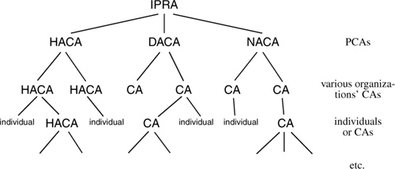

Networking Security Networking Security Networking Security Security Networking Security Networking Security Networking Charlie Kaufman Radia Perlman Mike Speciner Prentice Hall Network Security: Private Communication in a Public World, Second Edition
21.5. PEM Certificate Hierarchy
RFC 1422 recommends an organization of CAs. It recommends a single root CA, called the IPRA, which stands for Internet Policy Registration Authority and is managed by the Internet Society. Certified by the IPRA are CAs called PCAs (for Policy Certification Authorities), so named because each one has a written policy it will enforce in its issuance of certificates. The design envisions at least three kinds of policies that will be enforced. The names have not been standardized, so we'll arbitrarily name them for ease of explanation.
High Assurance (HA) A HA CA is meant to be super-secure. The rules aren't standardized, but some of the ideas are as follows. A HA CA is supposed to be implemented on special hardware designed so that it is tamper-resistant (impossible to extract its private key even if you were to steal the whole box), and managed by people who have passed security checks and perhaps periodic drug tests or other procedures. Also, the people who run a HA CA have to have wonderfully paranoid criteria for authenticating you before issuing you a certificate. Furthermore, a HA CA will refuse to grant a certificate to any organization that doesn't have the same strict rules about how its CA is managed and how its CA grants certificates. Discretionary Assurance (DA) A DA CA is intended to be well managed at the top level, but it doesn't impose any rules on the organizations to which it grants CA certificates (other than that they actually "own" the name listed in their certificate). The managers of a DA CA will make sure that when an organization, say the Chaos Computer Club, asks for a certificate for their CA, that they really are the Chaos Computer Club. However, the DA CA managers will not make any constraints on how the Chaos Computer Club manages its CA. Note that technically the IPRA is of the DA type. It can't be of the HA type, because it will issue certificates to a DA CA and a NA CA (see below) No Assurance (NA) A NA CA has no constraints except that it is not allowed to issue two certificates with the same name. It is expected that users certified by a NA CA will not in general use their real names and may in fact operate under personas (pseudonyms) like Rabid Dog. Even the issuing NA CA might not know the true identity of the users it certifies. The rule in RFC 1422 is that there can only be a single path through the CA hierarchy to any individual. What that means is that if an organization, say MIT, decides it wants to be certified with a DA CA, then it cannot also be certified with a HA CA. It also means that cross certificates (see §14.9 Hierarchy of Realms) are not allowed. The CA hierarchy is a tree. This rule makes it easy to know the proper chain of certificates to give to someone. The maximal set of certificates they can need is the chain of certificates beginning with the IPRA. There are disadvantages to the restrictions, however. Cross certificates are often useful, so that the chain of certificates can be shorter between two organizations with a lot of mail traffic. And sometimes the two organizations would trust each other's CAs more than they'd trust the entire chain of CAs to and from the IPRA. Also the rule prevents an organization that would like to get certificates from a HA CA (or made that decision at some point in the past) from granting a certificate to some suborganization's CA that will be less strict than the HA rules demand. An organization can accomplish this by operating two CAs, one which will follow the HA rules, and another which is not constrained by those rules.

|